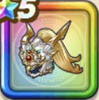

竜戦士のかぶと
攻略班 9.5点 / ゾンビ系への耐性+5%水系への耐性+5%ドラゴン系への耐性+5%水系への耐性+5%スキルの斬撃・体技ダメージ+5%【晴れ】メラ属性斬撃・体技ダメージ+4%会心率+2%【晴れ】会心率+2%
くわしい特徴
【レベル別習得スキル】 Lv1ゾンビ系への耐性+5% Lv5水系への耐性+5% Lv8スキルの斬撃・体技ダメージ+5% Lv10【晴れ】メラ属性斬撃・体技ダメージ+4% Lv12会心率+2% Lv15【晴れ】会心率+2% Lv18ドラゴン系への耐性+5% Lv20すばやさ+5 Lv23水系への耐性+5% Lv25守備力+5 【限界突破スキル】 1凸攻撃力+10 2凸すばやさ+12 3凸守備力+10 4凸さいだいHP+12